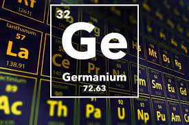

GERMANIUM

PROPERTIES
1) It is a gray – white brittle metal. It is bright, shiny, silvery color.Its symbol is (Ge).
2) Poor conductor of electricity (semiconductor)
3)It is insoluble with water and does not react with oxygen in room temperature.
4)It dissolves with hot acids and with oxygen at high temperature.
Reaction of germanium with oxygen
Ge+O2-->GeO2